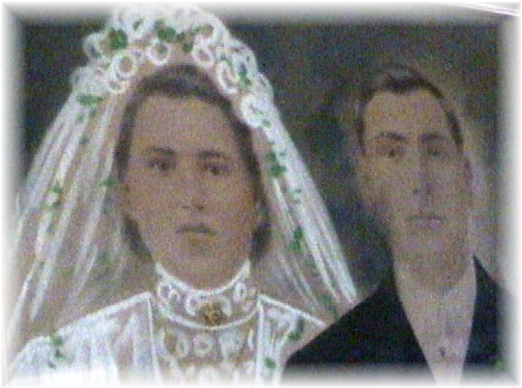

OLD FAMILY PHOTOS
Return to menu
Wedding picture of Anna Kotlarz and
Michael Sziry Sirak Martin 1913. Original still hangs in the living room of the house they built in Buttonwood section of Wilkes Barre PA. The portrait is a combination of photography and pastel artistry, especially noticeable in the bride’s veil and dress. This photo is taken from a videotape still shot.
Michael Sziry Sirak Martin as a young man
Photograph
taken prior to his marriage in 1913. This photo is a still shot
obtained from
a videotape.
Return to menu